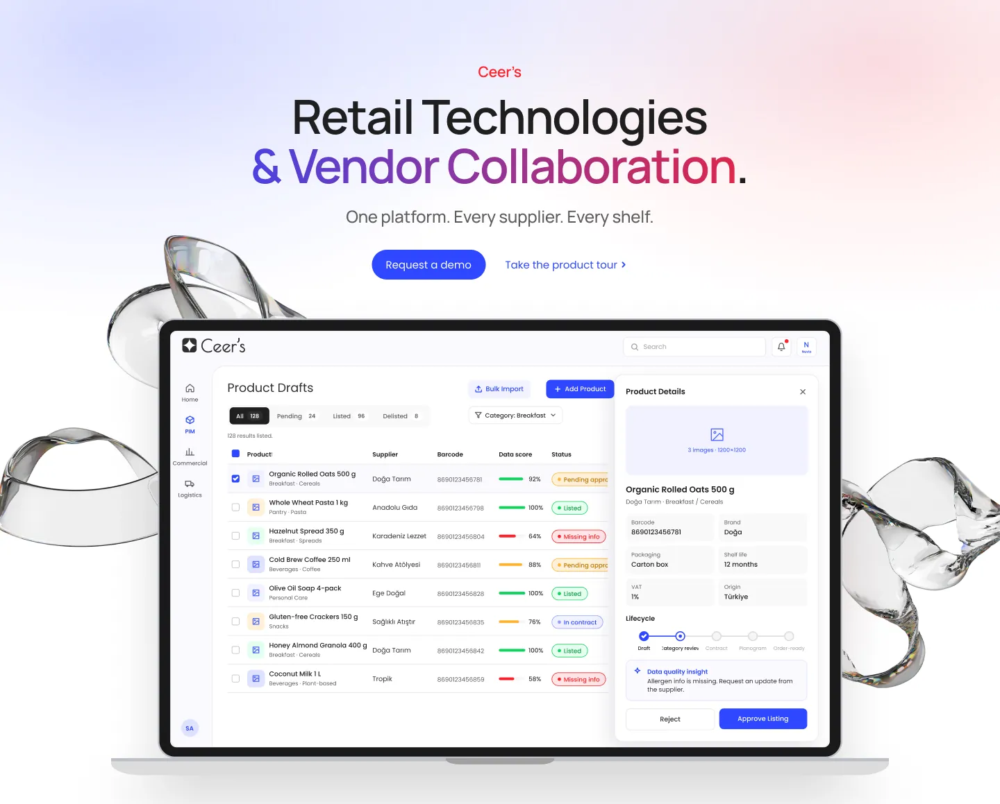
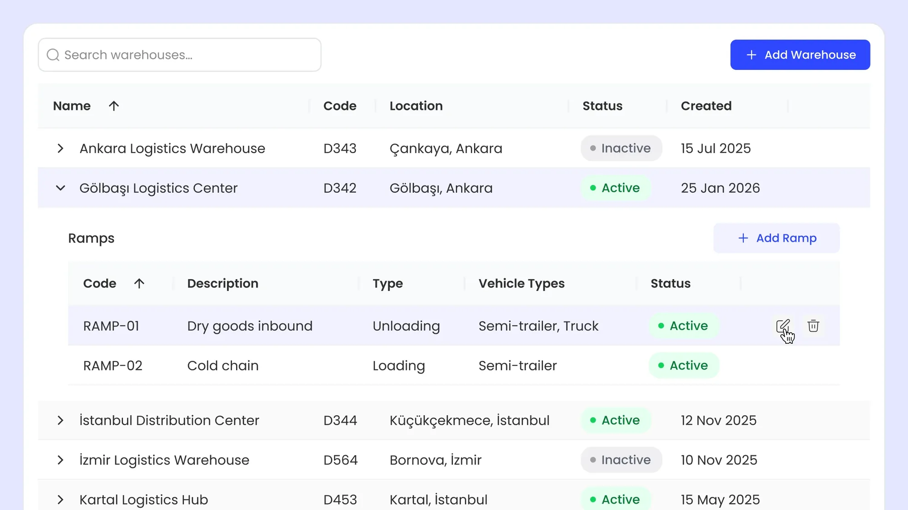
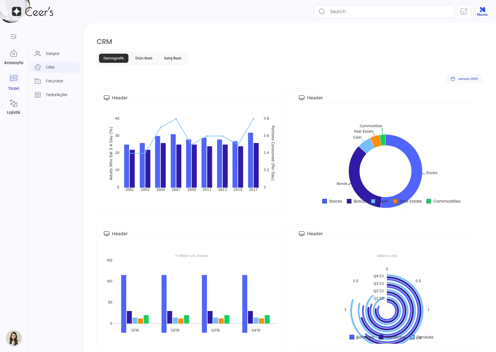
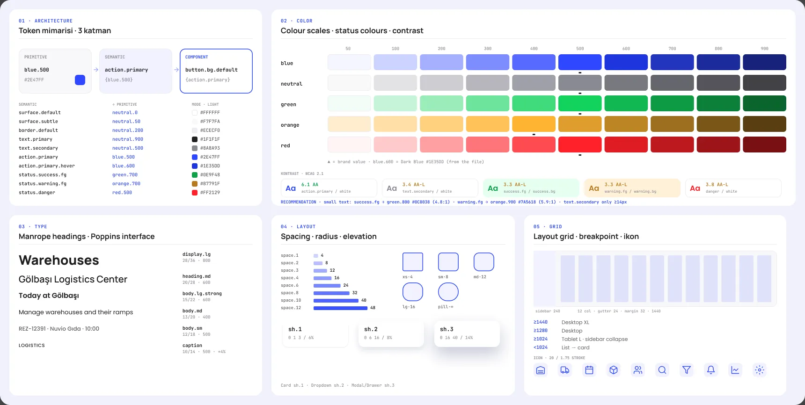
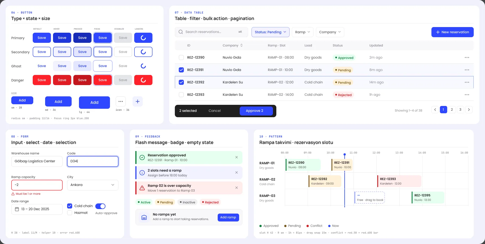
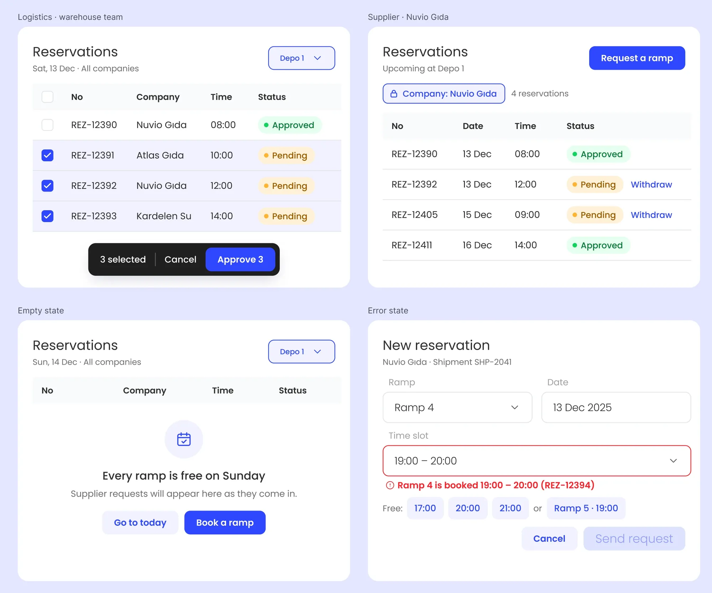
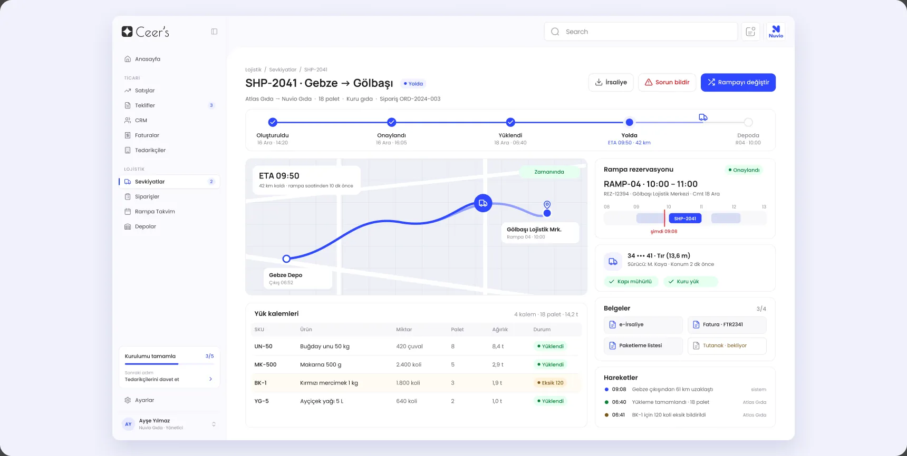
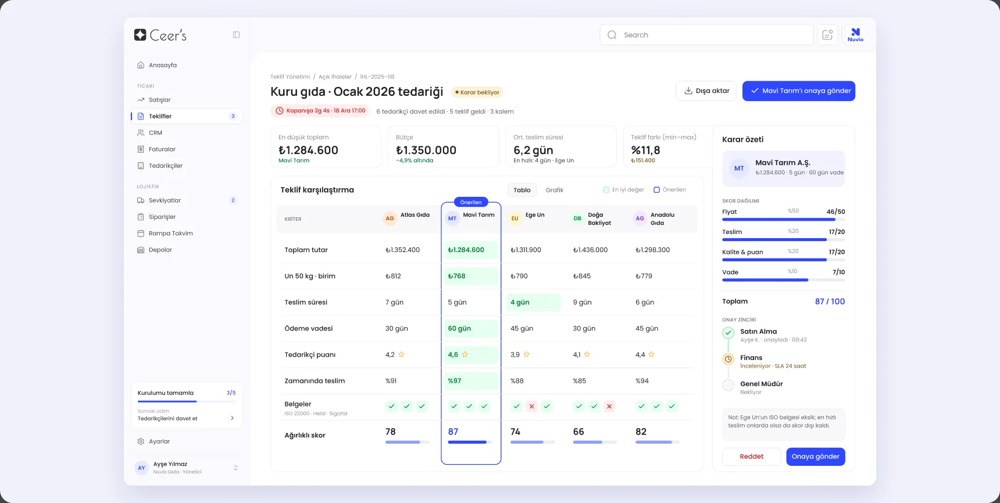
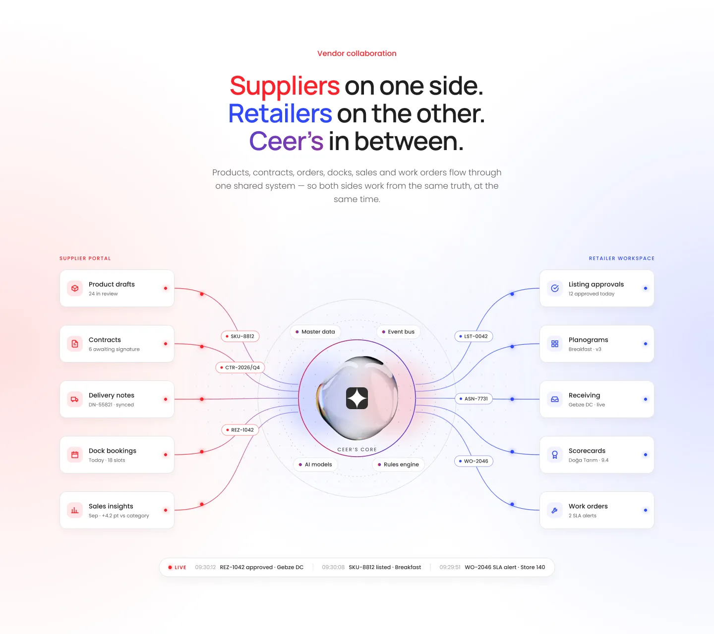
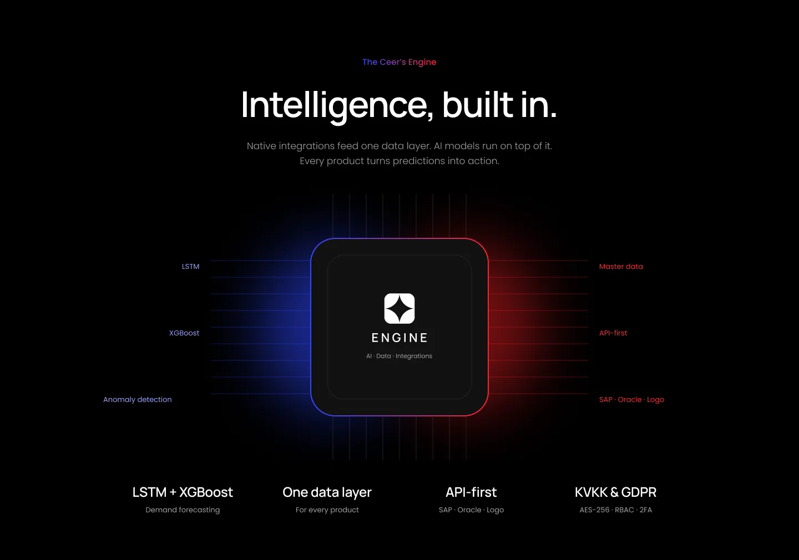

Four user types, one system.
Ceer's connects retailers and suppliers across FMCG operations. We started with nothing — no flows, no screens, no brand. Logistics, stock, ramp reservations, agreements and reporting all had to live in one interface, for four different kinds of user.

Four user types and six modules on one permission model.
21 component sets, extended when a module didn't fit — not bent to fit.
Sync went from weekly to monthly as the library took over the detail.
A platform this wide needs a spine
Four user types — system admin, supplier, company user, logistics — each needed a different slice of the same data. Sales reporting and KPIs, CRM analytics, invoicing, ramp reservations, shipments, warehouses, tender and agreement management: each one a module, each with a different idea of who may see what.
I worked with the owners and the technical team to walk real usage scenarios end to end before anything was drawn, and turned them into a module map and a role model the product hangs on. In the file that became three role spaces: 41 super-admin screens, 25 supplier screens and the warehouse flows.
Walking real scenarios end to end was the longest phase — and the one that decided everything after it.

Resisting grey
B2B logistics software pulls hard toward grey, and every competitor takes it. Ceer's runs on a saturated blue on a light interface, with colour reserved for state and data rather than decoration, so dense screens read as considered rather than heavy. Manrope sets the headings and Poppins the interface.
The brand and the densest screen were decided against each other in the same pass, then built into a library: 21 component sets with 92 variants — tables with filters, bulk actions and pagination; inputs, selects and date pickers; flash messages, badges and empty states; headers, menus and notifications.



The library as the contract with engineering
Early on we synced weekly, because screens were landing every week; every new page got a quick call before it was built. As patterns settled, a new page was mostly existing parts, and the calls went to fortnightly, then monthly — the detail was already in Figma. In between, I checked the front end on the test environment continuously.
Catching a difference the week it appears costs an afternoon. Catching it four modules later costs a sprint.

The module that didn't fit anything we had built
Mid-project a whole new area arrived: warehouse shipments, with a ramp calendar, reservations against it, an approval path with bulk approve and cancel, and shipment detail underneath. Every module so far had been a table, a filter and a form.
Forcing it into the existing patterns would have kept the library clean and made the flow worse, so the system was extended with new components designed against the real-world sequence: a ramp booking is a physical event with a truck attached to it. Tenders got the same treatment — offers compared on weighted criteria, with the approval chain beside them.


A website built from the product
Once the flows were settled I designed the website and the pitch deck too. The redesign is one homepage and five product pages — PIM, CRM & analytics, logistics, facility and asset management — on one template: a promise, the real interface in a device, three proof points, and the flow drawn from both sides.


A complex operation, with one place to run it.
Ceer's went from no flows and no screens to a working platform at ceershub.com, with a component library the team keeps building on, a responsive dashboard, and a website that shows the product rather than describing it.